Варіант 4. Виконав Чумак Кирил, група ІПЗ-11(3). Викладач Ковалюк Тетяна Володимирівна.
Мета роботи
- Вивчити подання рядків у вигляді масивів символів і функції обробки рядків.
- Опанувати введення рядків із перевіркою та роботу з текстом як масивом рядків.
- Навчитися розробляти алгоритми та програми обробки рядків без бібліотеки STL.
Умови задач
Варіант 4. У таблиці методички 24 варіанти, тому для номера 28 у списку групи маємо
28 - 24 = 4. Робота має два завдання. Заборонено використовувати бібліотеку STL, методи класу
string, ітератори й контейнери. Дозволено функції заголовних файлів
string.h, ctype.h, stdlib.h.
Завдання 1, варіант 4
Увести з клавіатури рядок алфавітних, цифрових і символів знаків арифметичних дій. Передбачити меню для виконання таких дій:
- з рядка видалити всі алфавітні символи, залишивши усі цифрові та знакові '+', '-', '*', '/' символи;
- перевести цифрові символи у числові типи та вивести числа на екран. Числа можуть бути n-значними, якщо декілька цифрових символів йдуть поспіль;
- над отриманими числами виконати арифметичні дії відповідно до операцій, заданих символами '+', '-', '*', '/' в порядку їх розташування в рядку. У випадку, якщо кількість отриманих чисел менша за кількість арифметичних операцій, додавати та віднімати число 0, множити та ділити на 1.
Вивести на екран усі перетворення рядка, результат у вигляді операндів та арифметичних операцій та результат арифметичного виразу. Контрольний тест: уведений рядок "asd123*45asas -rt56+hujk/qwe", результат 123*45-56+0/1=5479.
Завдання 2, варіант 4
Увести текст з n рядків з малих латинських літер. Необхідно стиснути текст, замінивши послідовності символів тексту одною великою латинською буквою. Для стиснення тексту ввести з клавіатури шифр у вигляді <велика латинська буква><послідовність малих латинських літер>. Різним замінюваним послідовностям символів можуть відповідати однакові великі латинські букви. Якщо в тексті зустрічаються великі латинські літери, то перед стисненням тексту перевести їх у нижній регістр. Необхідно стиснути текст так, щоб його довжина була мінімальна.
Аналіз задач
Завдання 1, варіант 4
Для розв'язання задачі потрібно ввести один рядок довжиною до 80 символів. Програма копіює з нього цифри й знаки + - * / у другий рядок. Усі інші символи зникають, зокрема пропуски. Пункти меню 2 і 3 спершу роблять таке саме очищення, тому їх можна вибирати в будь-якому порядку. Цифри, між якими стояли літери, після очищення йдуть поспіль і дають одне число.
Число читається функцією atof з позиції його першої цифри. Після цього позиція
переходить на символ за останньою цифрою.
Дії виконуються зліва направо, без пріоритету. Якщо після знака немає числа, для + і - береться 0, а для * і / береться 1. За цим самим правилом обробляються два знаки поспіль і рядок, який починається зі знака. У такому рядку першим числом вважається відсутнє, тому перед мінусом стоїть 0, а перед діленням 1.
Ділення дійсне, тому результат може бути дробовим. Для чисел використано double, бо
float зберігає близько 7 значущих цифр, а добуток може мати більше. Якщо дільник
дорівнює 0, програма виводить вираз і повідомлення про помилку без результату. Якщо результат
дорівнює нулю, у нього прибирається знак мінус, щоб не вивести -0.
Задовгий рядок вводиться повторно. Якщо в меню введено літери або число поза межами, програма просить ввести номер ще раз. Якщо в рядку немає цифр і знаків, пункт 3 повідомляє, що обчислювати нічого.
Таблиця 1 - Функції програми завдання 1
| Функція | Що робить |
|---|---|
printTitle | виводить назву роботи, автора й умову завдання |
inputText | вводить рядок із перевіркою довжини |
removeLetters | лишає цифри й знаки дій, виводить обидва рядки |
readNumber | перетворює цифри з поточної позиції на число |
printNumbers | виділяє всі числа й виводить їх |
readOperand | читає число або підставляє 0 чи 1 замість відсутнього |
applySign | виконує одну дію над результатом |
calculateExpression | виконує всі дії, виводить вираз і результат |
runMenu | виводить меню й виконує вибрані пункти |
main | викликає функції по черзі |
Завдання 2, варіант 4
Текст складається з 1-10 рядків до 80 символів. Рядок має містити лише латинські літери, тому
порожній рядок, цифра чи пропуск дають повідомлення і повторне введення. Шифр має 1-10 рядків виду
Aab: велика літера, а за нею хоча б одна мала. Однакова велика літера в різних рядках
шифру дозволена умовою. Великі літери тексту переводяться в малі функцією tolower.
Заміна послідовностей зліва направо не завжди дає найменшу довжину. Якщо шифр складається з
Aab і Bbcd, то рядок abcd після такої заміни стає Acd, а найкоротший запис
aB. Тому для кожного рядка програма заповнює масив B, де Bi є найменшою довжиною запису
перших i символів:
Тут L є довжиною послідовності шифру, яка закінчується в позиції i. Перший доданок означає, що
символ лишається без заміни. Перевіряються всі рядки шифру, а порівняння з текстом робить функція
strncmp. Масив B у коді називається best.
Поруч заповнюється масив usedCipher, де для кожної позиції записано номер вибраного
рядка шифру або -1. За ним стиснутий рядок відновлюється від кінця до початку. Кожен рядок тексту
стискається окремо, тому довжина всього тексту є сумою найменших довжин рядків. За однакової довжини
лишається перший знайдений варіант. Шифр з однією малою літерою довжину не зменшує, тому така літера
в тексті не замінюється.
Таблиця 2 - Функції програми завдання 2
| Функція | Що робить |
|---|---|
printTitle | виводить назву роботи, автора й умову завдання |
inputNumber | вводить ціле число в заданих межах |
inputLine | вводить один рядок із перевіркою довжини |
isLatinLine | перевіряє, що рядок складається з латинських літер |
isCipherCorrect | перевіряє вигляд рядка шифру |
inputText | вводить текст, переводить його в нижній регістр і виводить |
inputCipher | вводить рядки шифру |
findBestLengths | заповнює масиви best і usedCipher |
restoreLine | відновлює стиснутий рядок |
compressText | стискає всі рядки, виводить текст і довжини |
main | викликає функції по черзі |
Джерела: Ковалюк Т.В. Алгоритмізація та програмування, 2024; Ковалюк Т.В., Петрівський В.Я. Гарний стиль програмування мовами C, C++, C#, 2025; Кормен Т. та ін. Вступ до алгоритмів.
Блок-схеми алгоритмів
Завдання 1, варіант 4

printTitle (виведення назви роботи, автора й умови завдання)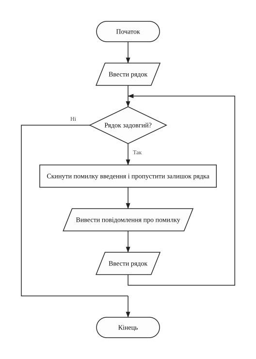
inputText (введення рядка з перевіркою довжини)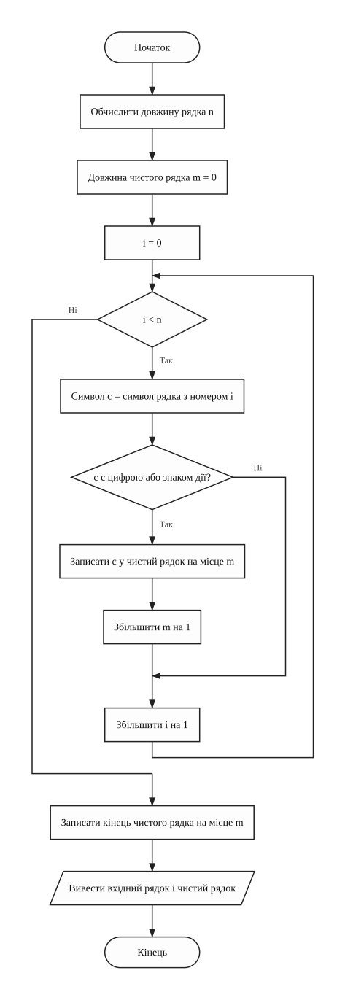
removeLetters (видалення з рядка всього, крім цифр і знаків дій)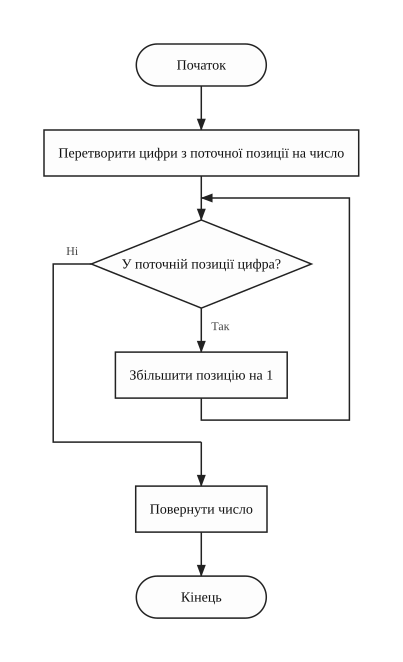
readNumber (перетворення цифр із поточної позиції на число)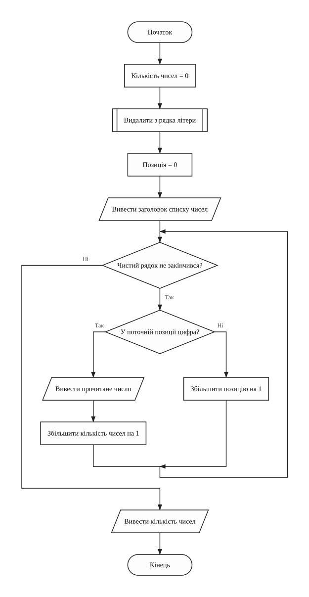
printNumbers (виділення чисел із рядка та їх виведення)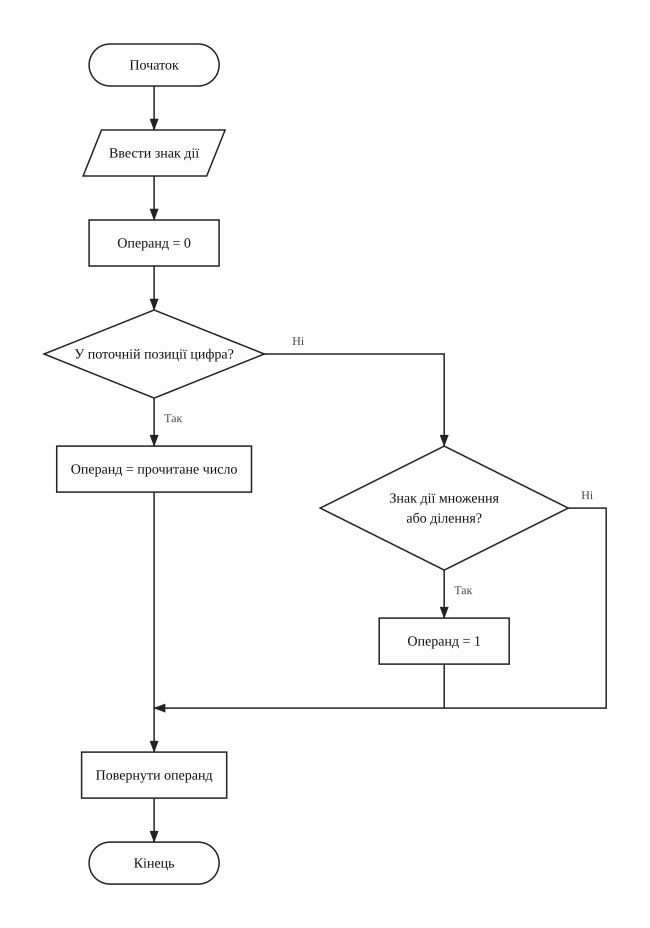
readOperand (читання операнда або заміна відсутнього числа)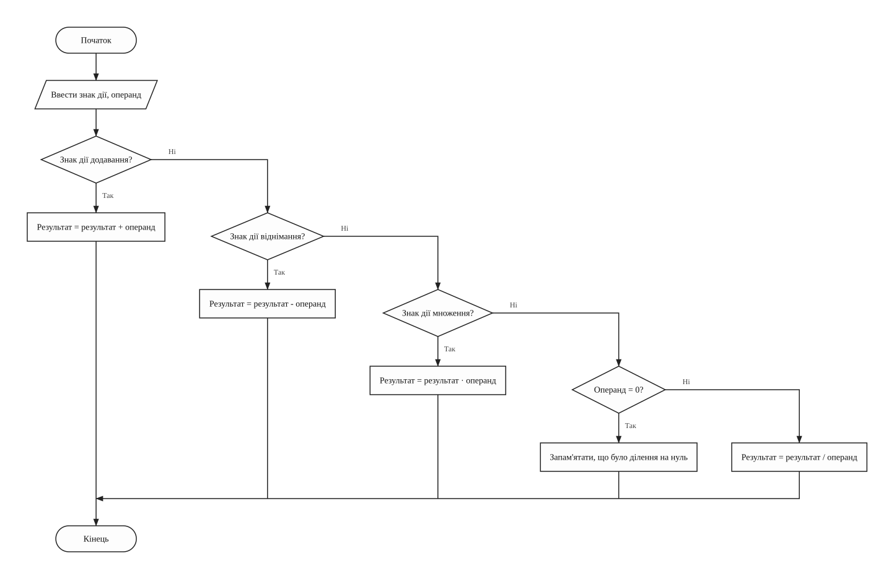
applySign (виконання однієї дії над результатом)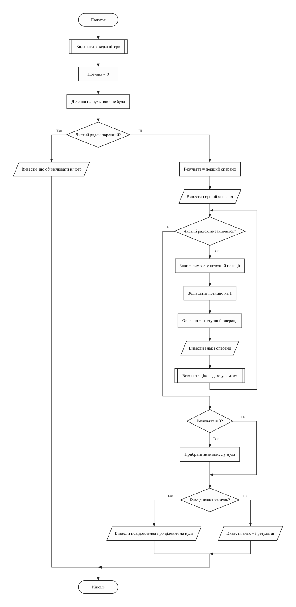
calculateExpression (обчислення виразу зліва направо)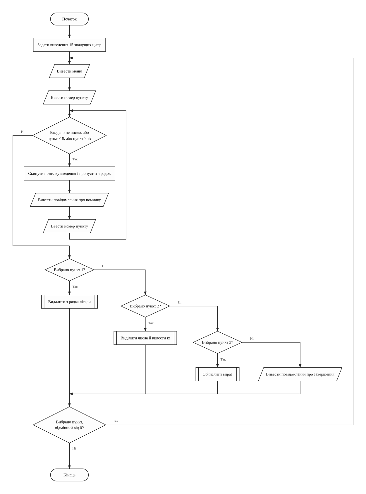
runMenu (меню дій над рядком)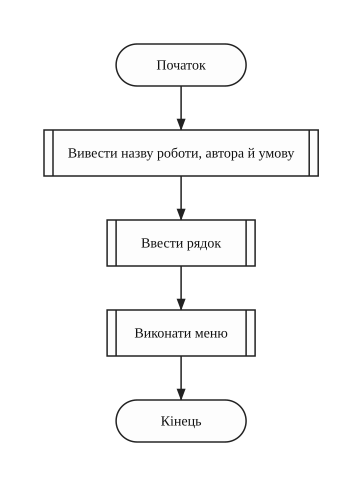
main (головна функція)Завдання 2, варіант 4

printTitle (виведення назви роботи, автора й умови завдання)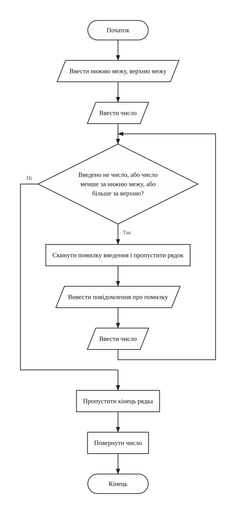
inputNumber (введення цілого числа в заданих межах)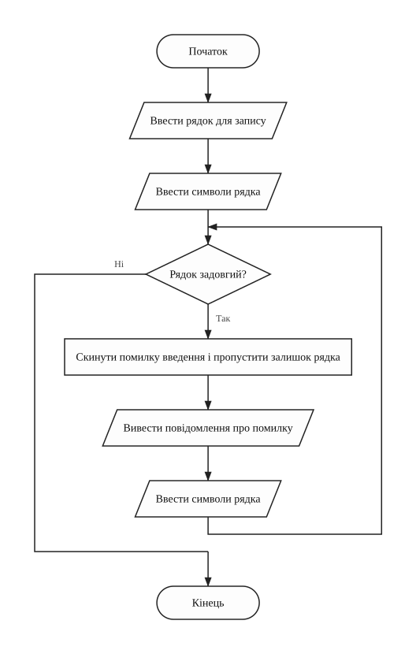
inputLine (введення одного рядка з перевіркою довжини)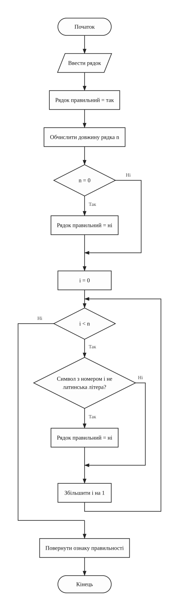
isLatinLine (перевірка, що рядок складається з латинських літер)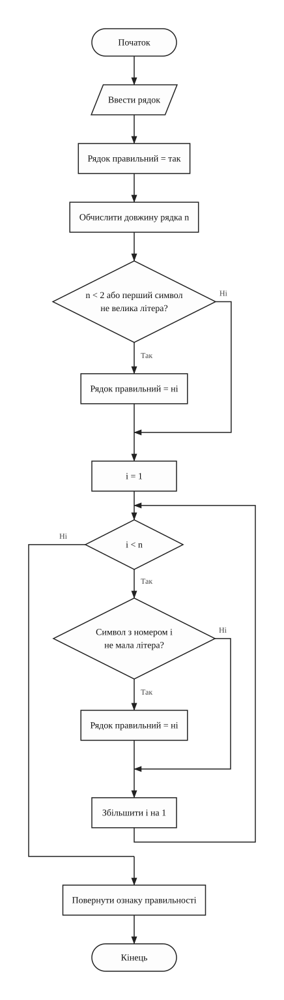
isCipherCorrect (перевірка рядка шифру)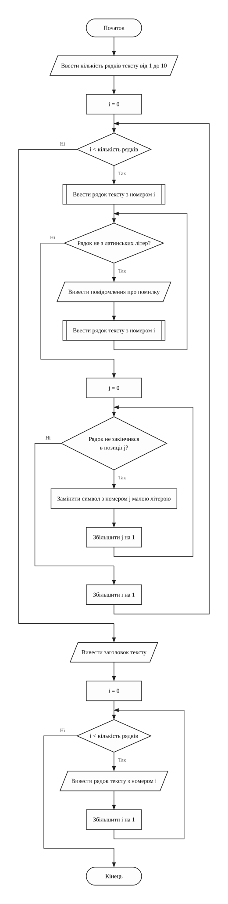
inputText (введення тексту й переведення в нижній регістр)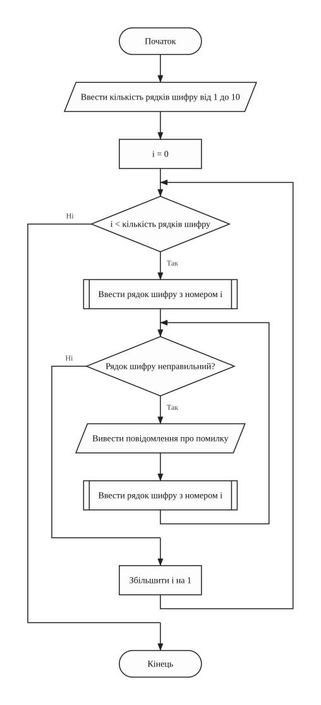
inputCipher (введення рядків шифру)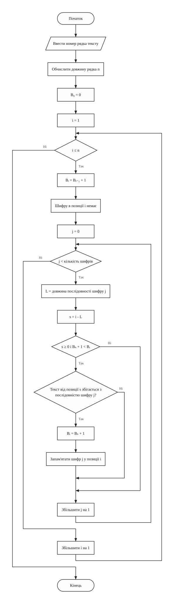
findBestLengths (пошук найменших довжин Bᵢ для одного рядка)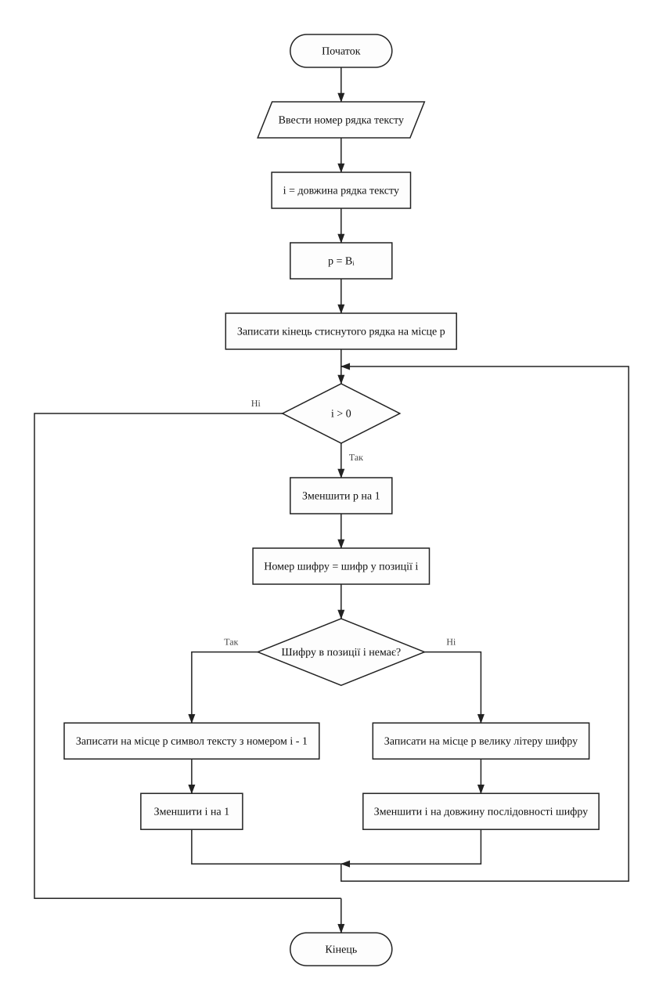
restoreLine (відновлення стиснутого рядка від кінця до початку)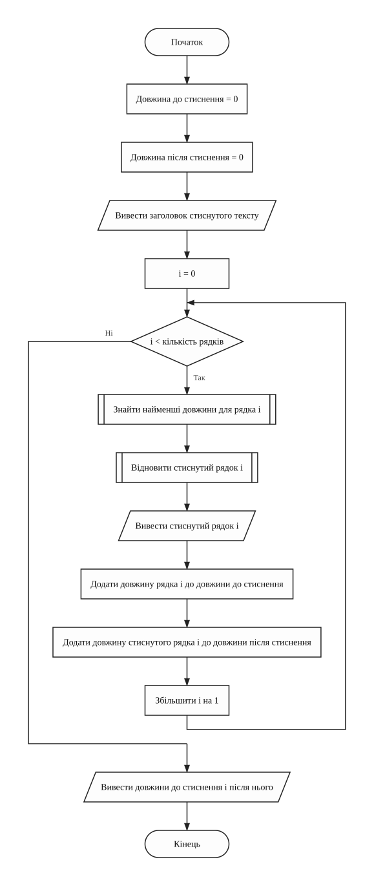
compressText (стиснення тексту й виведення довжин)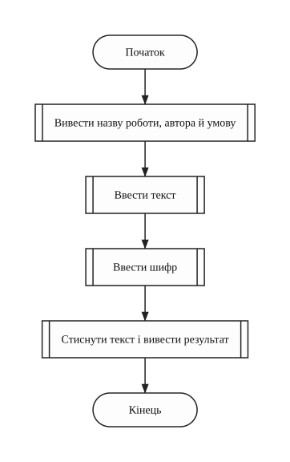
main (головна функція)Тексти програм
Завдання 1, варіант 4
Файл task1.cpp
/// <summary>
/// Лабораторна робота №9, завдання 1, варіант 4. Видалити з рядка літери,
/// перетворити цифри в числа і виконати арифметичні дії в порядку знаків.
/// </summary>
/// <remarks>
/// Ім'я файлу: task1.cpp
/// Автор: Чумак Кирил, гр. ІПЗ-11(3)
/// Номер версії модуля: version 1
/// </remarks>
#include <cctype>
#include <cstdlib>
#include <cstring>
#include <iomanip>
#include <iostream>
using namespace std;
// Константи
const int MAX_LENGTH = 81; // розмір рядка разом із символом кінця
// Глобальні змінні
char text[MAX_LENGTH] = ""; // введений рядок
char cleanText[MAX_LENGTH] = ""; // рядок лише з цифр і знаків дій
int position = 0; // поточна позиція в cleanText
double total = 0; // результат; double, бо у float 7 цифр
bool isDivisionByZero = false; // чи було ділення на нуль
/// <summary>
/// Виводить назву роботи й автора
/// </summary>
void printTitle()
{
cout << "Lab work 9. Task 1. Variant 4." << endl;
cout << "Author: Kyryl Chumak, group IPZ-11(3)" << endl << endl;
cout << "Enter a string of letters, digits and signs + - * /." << endl;
cout << "Remove the letters, convert the digits to numbers and" << endl;
cout << "perform the operations from left to right. If a number is" << endl;
cout << "missing, use 0 for + and -, and 1 for * and /." << endl << endl;
}
/// <summary>
/// Вводить рядок. Якщо рядок задовгий, введення повторюється
/// </summary>
void inputText()
{
cout << "Enter string (up to 80 characters): ";
cin.getline(text, MAX_LENGTH);
while (cin.fail())
{
cin.clear(); // скинути помилку введення
cin.ignore(1000, '\n'); // і пропустити залишок рядка
cout << "Error! Enter string of up to 80 characters: ";
cin.getline(text, MAX_LENGTH);
}
}
/// <summary>
/// Копіює в cleanText лише цифри й знаки дій, а потім виводить обидва рядки
/// </summary>
void removeLetters()
{
int length = strlen(text);
int cleanLength = 0;
int i = 0;
char symbol = ' ';
for (i = 0; i < length; i++)
{
symbol = text[i];
if (isdigit((unsigned char)symbol) || symbol == '+' || symbol == '-'
|| symbol == '*' || symbol == '/')
{
cleanText[cleanLength] = symbol;
cleanLength++;
}
}
cleanText[cleanLength] = '\0';
cout << "Source string: " << text << endl;
cout << "Without letters: " << cleanText << endl;
}
/// <summary>
/// Перетворює цифри з поточної позиції на число і переходить на перший символ
/// після них
/// </summary>
/// <returns>прочитане число</returns>
double readNumber()
{
double number = atof(&cleanText[position]);
while (isdigit(cleanText[position]))
{
position++;
}
return number;
}
/// <summary>
/// Чистить рядок, виділяє з нього всі числа й виводить їх
/// </summary>
void printNumbers()
{
int numberCount = 0;
removeLetters();
position = 0;
cout << "Numbers:";
while (cleanText[position] != '\0')
{
if (isdigit(cleanText[position]))
{
cout << " " << readNumber();
numberCount++;
}
else
{
position++;
}
}
cout << endl << "Count of numbers: " << numberCount << endl;
}
/// <summary>
/// Читає операнд. Якщо в поточній позиції немає числа, операнд дорівнює 0 для +
/// і - та 1 для * і /
/// </summary>
/// <param name="sign">знак дії, для якої потрібен операнд</param>
/// <returns>операнд</returns>
double readOperand(char sign)
{
double operand = 0;
if (isdigit(cleanText[position]))
{
operand = readNumber();
}
else if (sign == '*' || sign == '/')
{
operand = 1;
}
return operand;
}
/// <summary>
/// Виконує одну дію над результатом. Ділення на нуль не виконується, а лише
/// запам'ятовується
/// </summary>
/// <param name="sign">знак дії</param>
/// <param name="operand">другий операнд дії</param>
void applySign(char sign, double operand)
{
if (sign == '+')
{
total = total + operand;
}
else if (sign == '-')
{
total = total - operand;
}
else if (sign == '*')
{
total = total * operand;
}
else if (operand == 0)
{
isDivisionByZero = true;
}
else
{
total = total / operand;
}
}
/// <summary>
/// Чистить рядок, виконує дії зліва направо і виводить вираз разом із
/// результатом
/// </summary>
void calculateExpression()
{
double operand = 0;
char sign = ' ';
removeLetters();
position = 0;
isDivisionByZero = false;
if (cleanText[0] == '\0')
{
cout << "Nothing to calculate: no digits or signs." << endl;
}
else
{
total = readOperand(cleanText[0]);
cout << "Expression: " << total;
while (cleanText[position] != '\0')
{
sign = cleanText[position];
position++;
operand = readOperand(sign);
cout << sign << operand;
applySign(sign, operand);
}
if (total == 0)
{
total = 0; // прибрати знак мінус у нуля, щоб не вивести -0
}
if (isDivisionByZero)
{
cout << endl << "Error! Division by zero." << endl;
}
else
{
cout << "=" << total << endl;
}
}
}
/// <summary>
/// Виводить меню і виконує вибрані пункти до вибору виходу
/// </summary>
void runMenu()
{
int choice = 0;
cout << setprecision(15); // щоб довгі числа виводились усіма цифрами
do
{
cout << endl << "Menu:" << endl;
cout << "1 - remove letters" << endl;
cout << "2 - convert digits to numbers" << endl;
cout << "3 - calculate expression" << endl;
cout << "0 - exit" << endl;
cout << "Enter your choice (from 0 to 3): ";
cin >> choice;
while (cin.fail() || choice < 0 || choice > 3)
{
cin.clear(); // скинути помилку введення
cin.ignore(1000, '\n'); // і пропустити неправильний рядок
cout << "Error! Enter choice from 0 to 3: ";
cin >> choice;
}
switch (choice)
{
case 1 : removeLetters(); break;
case 2 : printNumbers(); break;
case 3 : calculateExpression(); break;
default : cout << "End of work." << endl; break;
}
} while (choice != 0);
}
/// <summary>
/// Головна функція програми
/// </summary>
/// <returns>0 після завершення роботи</returns>
int main()
{
printTitle();
inputText();
runMenu();
return 0;
}
Завдання 2, варіант 4
Файл task2.cpp
/// <summary>
/// Лабораторна робота №9, завдання 2, варіант 4. Стиснути текст за шифром так,
/// щоб довжина стиснутого тексту була найменшою.
/// </summary>
/// <remarks>
/// Ім'я файлу: task2.cpp
/// Автор: Чумак Кирил, гр. ІПЗ-11(3)
/// Номер версії модуля: version 1
/// </remarks>
#include <cctype>
#include <cstring>
#include <iostream>
using namespace std;
// Константи
const int MAX_LINES = 10; // найбільша кількість рядків тексту
const int MAX_CIPHERS = 10; // найбільша кількість рядків шифру
const int MAX_LENGTH = 81; // розмір рядка разом із символом кінця
// Глобальні змінні
char text[MAX_LINES][MAX_LENGTH] = {""}; // текст малими літерами
char cipher[MAX_CIPHERS][MAX_LENGTH] = {""}; // рядки шифру
char compressed[MAX_LINES][MAX_LENGTH] = {""}; // стиснутий текст
int best[MAX_LENGTH] = {0}; // найменша довжина перших i символів
int usedCipher[MAX_LENGTH] = {0}; // номер шифру в позиції i або -1
int lineCount = 0; // кількість рядків тексту
int cipherCount = 0; // кількість рядків шифру
/// <summary>
/// Виводить назву роботи й автора
/// </summary>
void printTitle()
{
cout << "Lab work 9. Task 2. Variant 4." << endl;
cout << "Author: Kyryl Chumak, group IPZ-11(3)" << endl << endl;
cout << "Enter a text of n lines and a cipher: lines like Aab," << endl;
cout << "where a capital letter stands for a sequence of small" << endl;
cout << "letters. Replace the sequences with the capital letters" << endl;
cout << "so that the text is as short as possible." << endl << endl;
}
/// <summary>
/// Вводить ціле число в заданих межах і пропускає кінець рядка. Підказку
/// виводить той, хто її викликає
/// </summary>
/// <param name="minValue">нижня межа</param>
/// <param name="maxValue">верхня межа</param>
/// <returns>введене число</returns>
int inputNumber(int minValue, int maxValue)
{
int number = 0;
cin >> number;
while (cin.fail() || number < minValue || number > maxValue)
{
cin.clear(); // скинути помилку введення
cin.ignore(1000, '\n'); // і пропустити неправильний рядок
cout << "Error! Enter number from " << minValue << " to " << maxValue
<< ": ";
cin >> number;
}
cin.ignore(1000, '\n'); // кінець рядка не потрапить у cin.getline
return number;
}
/// <summary>
/// Вводить один рядок. Якщо він задовгий, введення повторюється
/// </summary>
/// <param name="line">рядок, у який записується введення</param>
void inputLine(char line[])
{
cin.getline(line, MAX_LENGTH);
while (cin.fail())
{
cin.clear(); // скинути помилку введення
cin.ignore(1000, '\n'); // і пропустити залишок рядка
cout << "Error! Enter up to 80 characters: ";
cin.getline(line, MAX_LENGTH);
}
}
/// <summary>
/// Перевіряє, що рядок не порожній і містить лише латинські літери
/// </summary>
/// <param name="line">рядок, який перевіряється</param>
/// <returns>true, якщо рядок правильний</returns>
bool isLatinLine(char line[])
{
bool isCorrect = true;
int length = strlen(line);
int i = 0;
if (length == 0)
{
isCorrect = false;
}
for (i = 0; i < length; i++)
{
if (!isalpha((unsigned char)line[i]))
{
isCorrect = false;
}
}
return isCorrect;
}
/// <summary>
/// Перевіряє рядок шифру: велика літера, а за нею хоча б одна мала
/// </summary>
/// <param name="line">рядок, який перевіряється</param>
/// <returns>true, якщо рядок правильний</returns>
bool isCipherCorrect(char line[])
{
bool isCorrect = true;
int length = strlen(line);
int i = 0;
if (length < 2 || !isupper((unsigned char)line[0]))
{
isCorrect = false;
}
for (i = 1; i < length; i++)
{
if (!islower((unsigned char)line[i]))
{
isCorrect = false;
}
}
return isCorrect;
}
/// <summary>
/// Вводить текст, переводить його в нижній регістр і виводить
/// </summary>
void inputText()
{
int i = 0;
int j = 0;
cout << "Enter number of lines (from 1 to 10): ";
lineCount = inputNumber(1, MAX_LINES);
for (i = 0; i < lineCount; i++)
{
cout << "Enter line " << i + 1 << ": ";
inputLine(text[i]);
while (!isLatinLine(text[i]))
{
cout << "Error! Use only Latin letters: ";
inputLine(text[i]);
}
for (j = 0; text[i][j] != '\0'; j++)
{
text[i][j] = tolower(text[i][j]);
}
}
cout << endl << "Text in lower case:" << endl;
for (i = 0; i < lineCount; i++)
{
cout << text[i] << endl;
}
}
/// <summary>
/// Вводить рядки шифру виду Aab
/// </summary>
void inputCipher()
{
int i = 0;
cout << endl << "Enter number of cipher lines (from 1 to 10): ";
cipherCount = inputNumber(1, MAX_CIPHERS);
for (i = 0; i < cipherCount; i++)
{
cout << "Enter cipher " << i + 1 << ": ";
inputLine(cipher[i]);
while (!isCipherCorrect(cipher[i]))
{
cout << "Error! Use a capital letter and small letters: ";
inputLine(cipher[i]);
}
}
}
/// <summary>
/// Заповнює масив best для одного рядка і запам'ятовує в usedCipher, який шифр
/// дав найменшу довжину
/// </summary>
/// <param name="row">номер рядка тексту</param>
void findBestLengths(int row)
{
int length = strlen(text[row]);
int size = 0; // довжина послідовності шифру
int start = 0; // початок цієї послідовності в тексті
int i = 0;
int j = 0;
best[0] = 0;
for (i = 1; i <= length; i++)
{
best[i] = best[i - 1] + 1; // символ лишається без заміни
usedCipher[i] = -1;
for (j = 0; j < cipherCount; j++)
{
size = strlen(cipher[j]) - 1;
start = i - size;
if (start >= 0 && best[start] + 1 < best[i])
{
if (strncmp(&text[row][start], &cipher[j][1], size) == 0)
{
best[i] = best[start] + 1;
usedCipher[i] = j;
}
}
}
}
}
/// <summary>
/// Відновлює стиснутий рядок за масивом usedCipher, проходячи текст від кінця
/// до початку
/// </summary>
/// <param name="row">номер рядка тексту</param>
void restoreLine(int row)
{
int i = strlen(text[row]); // позиція в тексті
int place = best[i]; // позиція в стиснутому рядку
int cipherIndex = 0;
compressed[row][place] = '\0';
while (i > 0)
{
place--;
cipherIndex = usedCipher[i];
if (cipherIndex == -1)
{
compressed[row][place] = text[row][i - 1];
i--;
}
else
{
compressed[row][place] = cipher[cipherIndex][0];
i = i - (strlen(cipher[cipherIndex]) - 1);
}
}
}
/// <summary>
/// Стискає кожен рядок окремо, виводить стиснутий текст і довжини тексту до
/// стиснення та після нього
/// </summary>
void compressText()
{
int lengthBefore = 0;
int lengthAfter = 0;
int i = 0;
cout << endl << "Compressed text:" << endl;
for (i = 0; i < lineCount; i++)
{
findBestLengths(i);
restoreLine(i);
cout << compressed[i] << endl;
lengthBefore = lengthBefore + strlen(text[i]);
lengthAfter = lengthAfter + strlen(compressed[i]);
}
cout << endl << "Length before compression: " << lengthBefore << endl;
cout << "Length after compression: " << lengthAfter << endl;
}
/// <summary>
/// Головна функція програми
/// </summary>
/// <returns>0 після завершення роботи</returns>
int main()
{
printTitle();
inputText();
inputCipher();
compressText();
return 0;
}
Результати виконання
Завдання 1, варіант 4
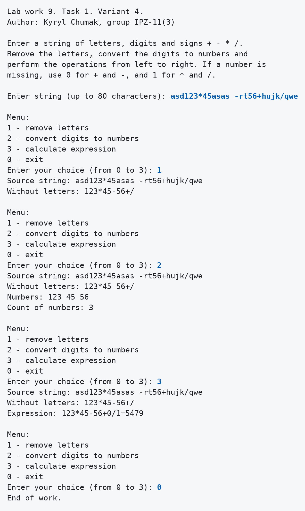
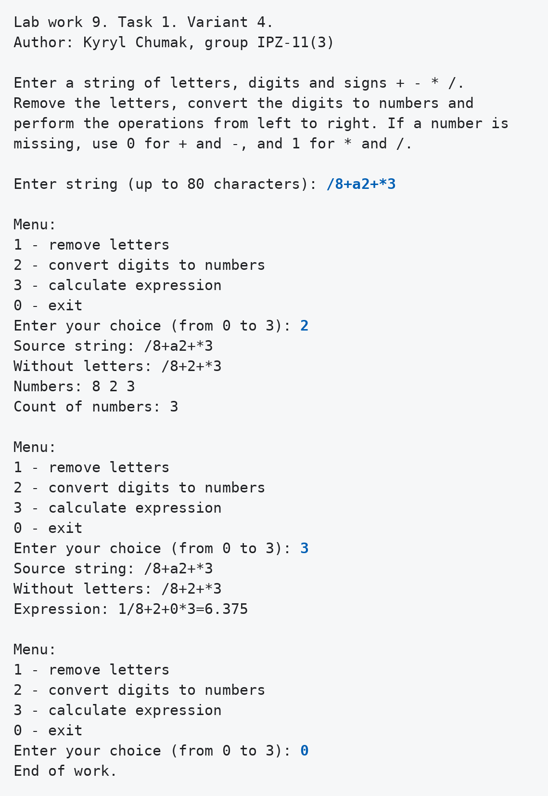
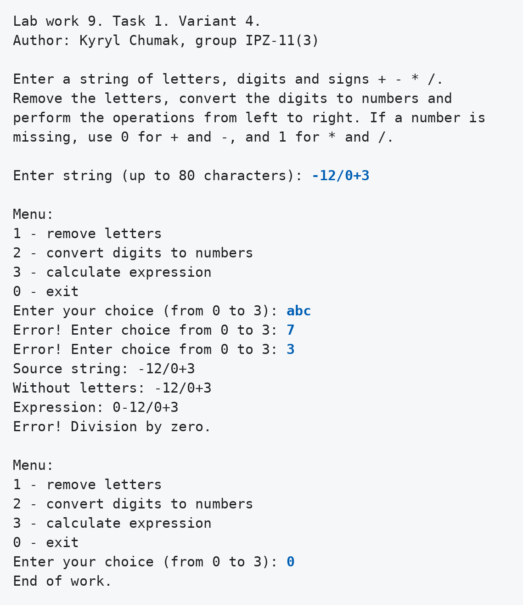
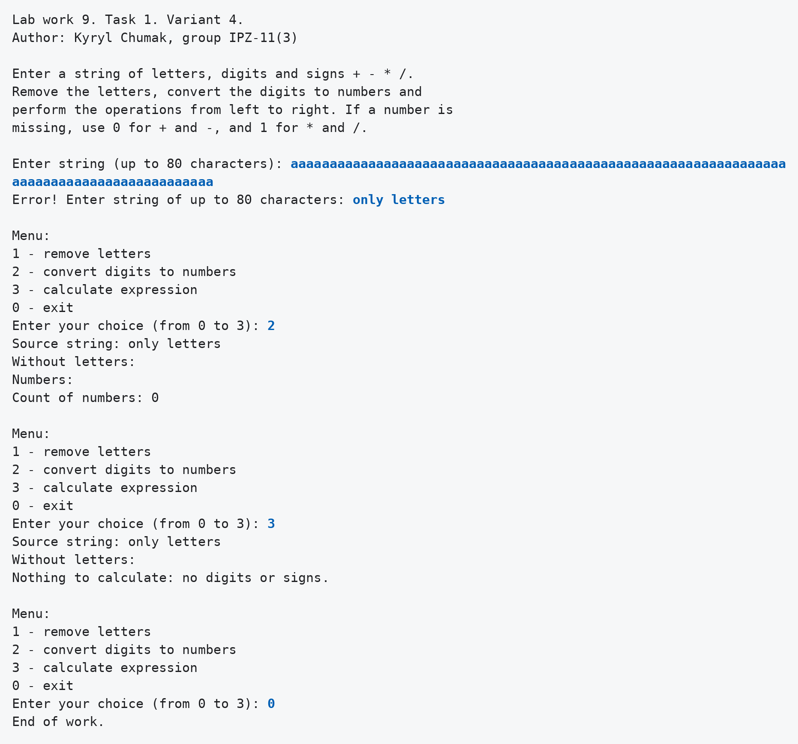
Завдання 2, варіант 4
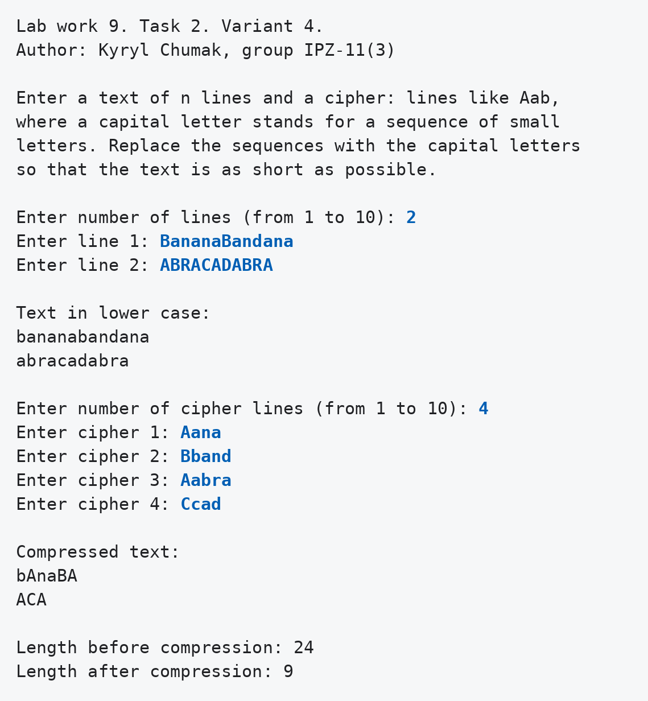
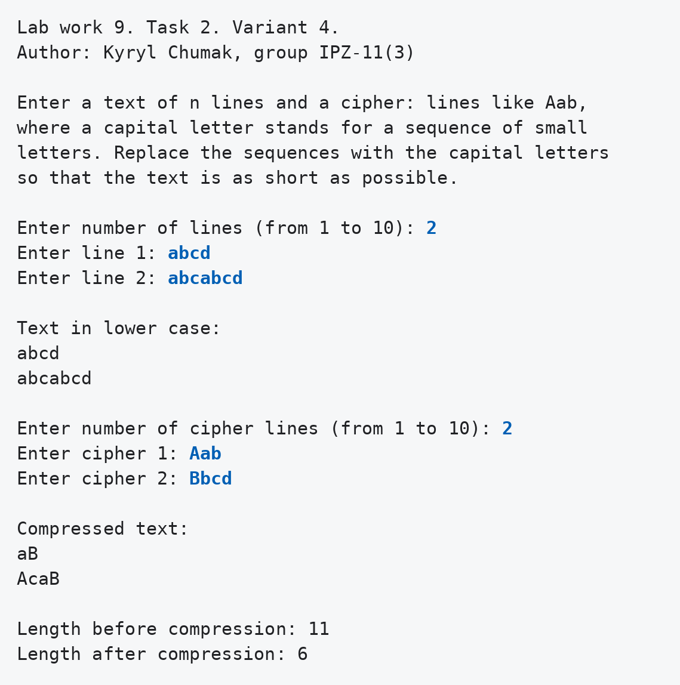
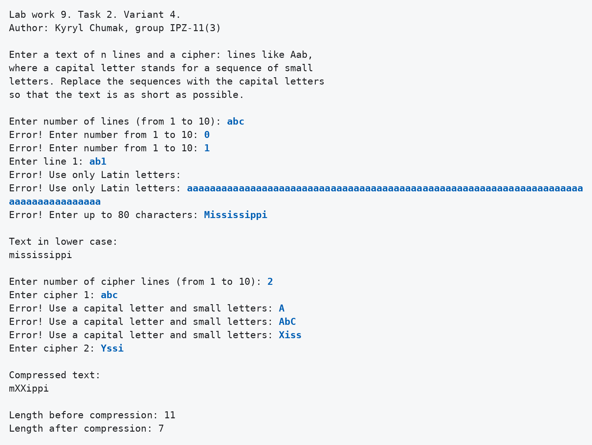
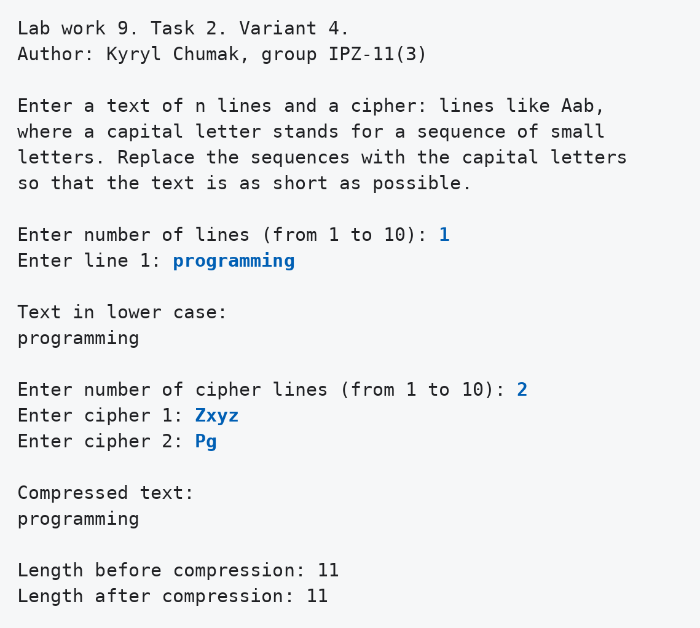
Аналіз достовірності результатів
Завдання 1, варіант 4
Контрольний тест методички я порахував вручну. Після очищення лишається рядок 123*45-56+/. Два останні знаки не мають чисел, тому отримуємо 123*45-56+0/1:
Другий рядок із таблиці рахується так само: 1 / 8 = 0.125, 0.125 + 2 = 2.125, 2.125 + 0 = 2.125, 2.125 · 3 = 6.375.
Таблиця 3 - Контрольні тести завдання 1
| Введений рядок | Очікуваний результат | Результат програми |
|---|---|---|
asd123*45asas -rt56+hujk/qwe | 123*45-56+0/1=5479 | 123*45-56+0/1=5479 |
/8+a2+*3 | 1/8+2+0*3=6.375 | 1/8+2+0*3=6.375 |
-12/0+3 | вираз 0-12/0+3 і помилка | 0-12/0+3, Error! Division by zero. |
only letters | порожній рядок, чисел 0, нічого обчислювати | Count of numbers: 0,
Nothing to calculate: no digits or signs. |
Завдання 2, варіант 4
Для рядка abcd і шифру Aab, Bbcd я заповнив масив вручну.
Таблиця 4 - Ручне заповнення масиву B для рядка abcd
| i | Перші i символів | Розрахунок | Bi |
|---|---|---|---|
| 1 | a | B0 + 1 | 1 |
| 2 | ab | шифр Aab: B0 + 1 | 1 |
| 3 | abc | B2 + 1 | 2 |
| 4 | abcd | шифр Bbcd: B1 + 1 | 2 |
Останнє значення дорівнює 2, а від кінця рядка читається запис aB. Програма вивела той самий рядок. Рядок abcabcd після заміни зліва направо дав би AcAcd довжиною 5, а програма знайшла AcaB довжиною 4.
Таблиця 5 - Контрольні тести завдання 2
| Текст | Шифр | Очікувано, порахунок вручну | Результат програми | Довжини |
|---|---|---|---|---|
| bananabandana | Aana, Bband, Aabra, Ccad | b + ana + n + a + band + ana | bAnaBA | 24 і 9 |
| abracadabra | abra + cad + abra | ACA | ||
| abcd | Aab, Bbcd | a + bcd | aB |
11 і 6 |
| abcabcd | ab + c + a + bcd | AcaB | ||
| mississippi | Xiss, Yssi | m + iss + iss + i + p + p + i | mXXippi | 11 і 7 |
| programming | Zxyz, Pg | заміни не скорочують рядок | programming | 11 і 11 |
Некоректні дані показано на рисунках у попередньому розділі: літери замість числа, число поза межами, задовгий рядок, порожній рядок, цифра в тексті, рядки шифру без великої літери, без малих літер і з великою літерою в кінці. Після кожної такої помилки програма просить ввести дані ще раз.
Висновки
Написано дві програми обробки рядків на масивах символів. Перша видаляє з рядка літери, виділяє числа й виконує дії зліва направо. Контрольний тест методички дав рівно 123*45-56+0/1=5479, і ручний розрахунок дав те саме. Складніше було вирішити, що вважати відсутнім числом, коли рядок починається зі знака або два знаки стоять поруч.
Друга програма стискає текст за шифром. На прикладі abcd видно, що заміна зліва направо дає довший запис, тому довелося рахувати найменшу довжину для кожного початку рядка і запам'ятовувати вибраний шифр. У тестах довжина зменшилась з 24 до 9, а якщо заміна не скорочує рядок, текст лишається без змін. Стиснення виконується лише всередині одного рядка, послідовність на межі двох рядків не замінюється.